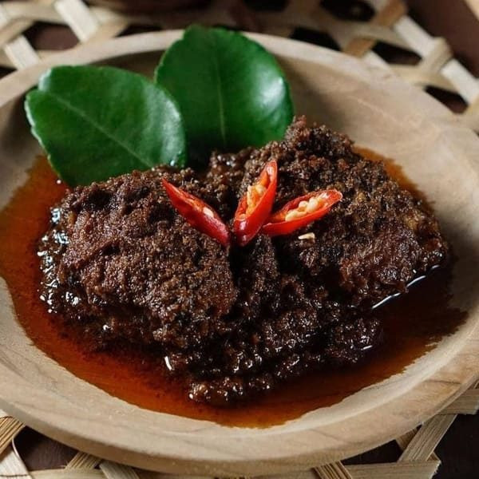

Back to Index
Beef Rendang

Beef rendang is a traditional Indonesian dish originating from the Minangkabau ethnic group of Indonesia.
It is a type of rich and flavorful beef stew that's slow-cooked with a mixture of coconut milk and a complex blend of spices and herbs.
Beef rendang is often served with steamed rice and is a popular dish not only in Indonesia but also in neighboring countries like Malaysia and Singapore.
It is considered one of Indonesia's national dishes and is often served during special occasions and celebrations.
Ingredients: Main
- 1 kg beef
- 600 ml coconut cream
- 100 ml vegetable oil
Ingredients: To Blend
- 4 candlenuts
- 12 cloves chopped garlic
- 300 g red chili, (Serrano chili/pepper)
- 250 g onions
- 50 g ginger
- 50 g galangal
- 25 g ground turmeric, or 50g of fresh turmeric
- 1½ tsp ground coriander
- 1 tbsp salt
- 1 tsp sugar
- 4 green cardamom pods
- 1½ tsp cumin seeds
- 10 cloves
Ingredients: Additional Spices
- 4 stalks lemongrass, bashed
- 3 pieces kaffir lime leaves
- 1 piece asam keping
- 2 turmeric leaves, tied up
Instructions
- Cut the beef into 4 cm squares, half cm thick. Do not cut the beef too small as the meat can break into smaller pieces during cooking.
- Blend all the ingredients in (B), set the blend aside.
- Remove the green section and the outer sheath of the lemongrass. Use only the white portion. Bash them so that the lemongrass to ensure the release of the flavor.
- Heat up the vegetable oil in a wok. Saute the spice paste (B) over low heat until aromatic.
- Add the coconut cream, turmeric leaves, kaffir lime leaves, asam keping and lemongrass into the wok.
- Add the beef and cook over medium heat. Bring the coconut milk to a boil.
- Once it is boiled, continue simmer over low heat. Add water from time to time when the stew is about to dry.
- Cook until the beef absorbs the flavor of the spices thoroughly and the color turns to dark brown. It will take about three hours.
- Served with rice or bread.
Back to Top